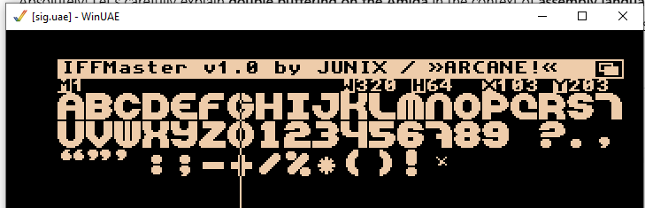

How can we print text to the screen? Well, since we have shut down the operating system, we need to use a custom font. This is the one I use.
The Amiga's custom font is stored in a specific format in memory. Each character is represented as a series of bytes that define its pixel pattern. To display text, you need to read the appropriate bytes for each character from the font data and then use the Blitter to copy those patterns onto the screen at the desired location.

So basically, we have to map text from our code to letters in this font. What we need to do is get the ASCII value of a character and determine its position (row and column) in our custom font. We can see that ‘A’ is the first letter in the font, and the ASCII value of ‘A’ in code is $41. So by subtracting that value, we get the first letter in the font as base position 0. In this way, we can calculate each character in code and map it to the corresponding character in the custom font.
How about a sine scroller? In this case, we use the BLTAFWM mask register for Blitter channel A. For example, if our custom font is 16×16 pixels, and we want a smooth sine scroller with 1-pixel resolution, we need to shift the mask in the loop one row at a time. So how does the loop look like? Well here it is
move.w #19,d1 ; D1=Number of worrds to blit-1
move.l mask,d2 ; D2=Mask value
move.w #0,d5 ; D3=Offset
move.w #pixel,d2
ror.w #4,d2
clr.l d3
GetSine1
add.w #pixel*4,d3
and #$3ff,d3
move.w (a3,d3.w),d4
move.l buffscr,a0 ; Source=ScrollText plane
move.l WSCR,a1 ; Dest=Buffer+Offset
add.w #100*44,a1
add.w d5,a0 ; Get to word to blit
add.w d5,a1 ; Get to word to blit
if SCROLLTYPE != 0
add.w d4,a1
ENDC
; Add Y offset to dest
WBlitl btst #14,dmaconr(a6) Blitter done
bne.s WBlitl If not wait
; bsr BlitterBusy ; test blitter busy
move.l a0,bltapth(a6) ; Source=Scroll plane
move.l a1,bltbpth(a6) ; Source=Destination
move.l a1,bltdpth(a6) ; Dest=Buffer
move.w #42,bltamod(a6) ; A modulo=46-2
move.w #42,bltbmod(a6) ; B modulo=40-2
move.w #42,bltdmod(a6) ; D modulo=40-2
move.w d2,bltafwm(a6) ; D2=Pre-loaded mask value
move.w #$ffff,bltalwm(a6) ; No mask
move.w #$0,bltcon1(a6) ; Clear
move.w #%110111111100,bltcon0(a6) ; AB-D blit
move.w #(15*64)+1,bltsize(a6) ; 16*16
lsr.w #PIXEL,d2 ; Mask next pixel to the right
dbra d0,GetSine1 ; Blit rest of word
move.w mask,d2 ; Reset mask value
move.w #16/pixel-1,d0 ; Reset counter 1
add.w #2,d5 ; Get to next word
dbra d1,GetSine1 ; Blit next word
As you can see there is 2 loops. One for each character in font and the other one the row of each character in this case 16. the logic function AB-D is used that means Blitter channel A AND B = D is neccesary to preserve each row.
Here is a an example of fully working sinsecroller that has many features.
******************************************
* Scroller and Sinus scroller by Sigurjon
* 6.9.2075
* For my asm course in demo making for the Amiga
* Features
* Double bufffering and 1 pixel sinus sinuscroller
******************************************************
*************************************
* Here are all the hardware equates *
*************************************
incdir ""
*include df1:INCLUDES/HardwareEquates.s
include work:assembler/HardwareEquates.s
********lesk**************************
* Exec base and structure offset *
**********************************
ExecBase equ $0004
***************************
* These are the cia-names *
***************************
CIAASDR equ $bfec01
CIAAICR equ $bfed01
CIAACRA equ $bfee01
**********************
* Control characters *
**********************
lf equ $09
**************************
* Screen display equates *
**************************
ScreenHeight equ 257
ScreenWidth equ 352/8
ScreenDepth equ 4
ScreenMemory equ ScreenHeight*ScreenWidth*ScreenDepth
SCROLLTYPE equ 1 ; regular scroller =0 Sinescroller =1
PIXEL=1 ; Granularity of sine scroller 1,2 or 4
SHOWRASTER = 0 ; show rastertime
MUSIC = 0
*******************************************
* Here is where the actual program begins *
*******************************************
lea.l Sin,a0 Get start of sinus table
move.w #512-1,d0 This the lenght
SinCut move.w (a0),d1 Get entry
ext.l d1
divs #156*2,d1 And divide
add.w #ScreenHeight/10-4,d1
mulu.w #ScreenWidth*1,d1
move.w d1,(a0)+ Save entry again
dbra d0,SinCut Do until sinus table finished
* Init mask
move.w #pixel,pixelt
cmp.w #2,PIXELt
bne test3
move.w #$c000,mask
test3
cmp.w #4,PIXELt
bne test4
move.w #$f000,mask
test4:
cmp.w #8,PIXELt
bne test5
move.w #$ff00,mask
test5:
cmp.w #16,PIXELt
bne test6
move.w #$ffff,mask
test6:
movea.l ExecBase,a5 Get execbase for sys copper get
lea.l Custom,a6 And hardware base also
bsr SetBplPointers
bsr KillInterrupts Geuss what
bsr SetDMA And geuss again
bsr SetCIA Set the CIA chips
bsr InitScreen Set mine screen
IF MUSIC=1
jsr mt_init
ENDC
lmb btst #6,$bfe001 Test left mouse button
bne lmb Looped until pressed
bsr RestoreScreen Set system screen
bsr ResCIA Restore the CIA chips
bsr RestoreDMA Restore system dma
bsr RestoreInterrupts Restore system interupts
IF MUSIC=1
jsr mt_end
ENDC
moveq.l #0,d0 Signal dos : no error
rts Quit program
***************************************
* This is my vertical blank interrupt *
***************************************
MyVBLI movem.l d0-d7/a0-a6,-(sp) Save regs
lea.l Custom,a6
if SHOWRASTER=1
move.w #$000F,color00(a6)
ENDC
* Double buffering
lea.l BplPointers,a0 Get bitplane pointers in copper
move.w #ScreenDepth-1,d1
move.l DScr(pc),d0 Get screen adress
NextPlane
move.w d0,6(a0) And set low address word
swap.w d0 Low = High : High = Low
move.w d0,2(a0) And set high adress word
swap d0
add.l #ScreenWidth*256,d0
addq.w #8,a0
dbra d1,NextPlane
WBlit2 btst #14,dmaconr(a6) Blitter done
bne.s WBlit2 If not wait
* clear screen
move.l #-1,bltafwm(a6)
move.l WScr(pc),d0
move.l d0,bltdpth(a6)
move.w #4-1,d7
move.l WSCR,d0
move.l d0,bltdpth(a6)
clrloop
move.w #0,bltdmod(a6) Modulo for screen clear
move.l #$01000000,bltcon0(a6)
move.w #ScreenHeight*64+ScreenWidth/2,bltsize(a6)
WBlit2a btst #14,dmaconr(a6) Blitter done
bne.s WBlit2a If not wait
add.l #screenheight*screenwidth,d0
dbf d7,clrloop
JSR COPYIMAGE *blit logo
bsr sinescroller *Sine scroller
IF MUSIC=1
jsr mt_music
ENDC
move.b KeyDown(pc),d0
lea.l WScr(pc),a0
lea.l DScr(pc),a1
move.l (a0),d0
move.l (a1),d1
move.l d1,(a0)
move.l d0,(a1)
out
if SHOWRASTER=1
move.w #$000,color00(a6)
ENDC
movem.l (sp)+,d0-d7/a0-a6
move.w #$0070,intreq+custom Clear vbli request
rte
mask dc.w $8000
pixelt dc.w 1
SinAdd0 dc.w 0*2
SinAdd1 dc.w 0*2
SinAddV dc.w 0*2
SinPos0 dc.w $0000
SinPos1 dc.w $0000
TextPos dc.l $00000000
TextSpd dc.w $0007
TextFix dc.w $0000
even
KeyDown dc.w $0000
WScr dc.l Screen0
DScr dc.l Screen1
buffscr dc.l buffer
cnt dc.w 0
txtpos dc.w 0
cntbit dc.w 0
DummySprite
dc.w $0000,$0000 Spr0pos+spr0ctl
****************************************************
* And this sets the bitplanepointers in copperlist *
****************************************************
SetBplPointers
lea.l BplPointers,a0 Get bitplane pointers in copper
lea.l Screen0,a1 Get screen adress
move.l a1,d0 And move to data register so i can swap
move.w #ScreenDepth-1,d1 Get screen depth (-1 for dbra)
ScLoop move.w d0,6(a0) And set low address word
swap.w d0 Low = High : High = Low
move.w d0,2(a0) And set high adress word
swap.w d0 High = Low : Low = High
add.w #ScreenWidth*256,d0 Add screenwidth to screen for layed bitmaps
adda.w #8,a0 Add to next bitplane in copper
dbra d1,ScLoop Do until all bitplanes are finished
rts Return from subroutine
sinescroller
WBlit2b btst #14,dmaconr(a6) Blitter done
bne.s WBlit2b If not wait
clr.l d3
lea.l cnt,a0
addq.w #1,(a0)
lea font,a1
cmp.w #8,(a0)
blt scroll
move.w #0,(a0)
lea text,a0
lea txtpos,a1
add.w #1,(a1)
move.l #0,d3
move.w (a1),d1
move.b (a0,d1),d2
CMP.B #0,D2
bne noreset
move.w #1,txtpos
noreset
cmpi.b #' ',d2 ; Is it a space?
bne LineA
move.b #'[',d2 ; Works out as a space
LineA
cmp.b #'T',d2
bLS noadd1
sub.b #85,d2 ; Work out character place
mulu #2,d2 ; in font
add.l #640,d2
bra out1
noadd1
sub.b #65,d2
mulu #2,d2 ; in font
OUT1
* add.w d2,d2
GetChar move.b #$4,Delay New Char delay
add.l #$1,textpos next scroller character
move.l #checker,a0 valid chars
move.l #text,a1 start of text
move.l textpos,d2 move text pos,d2
move.l #0,d0 clear for char byte
move.l #0,d1 clear for char count
move.b (a1,d2),d0 get character
bgt.s ch_lp if not zero,not end
move.l #$0000,textpos if zero wrap text
ch_lp cmp.b (a0)+,d0 buffer to checker
beq.s match branch if char found
addq.b #1,d1 add to char count
cmpi.b #53,d1 all chars checked?
bne.s ch_lp if not,loop
move.b #36,d1 invalid char = space
match move.l d1,d0 save char number
divu #20,d1 no.chars per row in font
move.l d1,d2 save row to d2
mulu #640,d1 40bytesx16pxls (1 line)
mulu #20,d2 row no. x no. chars
sub.l d2,d0 calc char horiz pos
mulu #2,d0 2bytes x horiz pos
add.l d1,d0 add vert+horiz pos
WBlit3 btst #14,dmaconr(a6) Blitter done
bne.s WBlit3 If not wait
lea font,a1
add.l d0,a1
* add.w d3,a1
move.l buffscr,d0
add.w #42,d0
move.l d0,bltdpth(a6)
move.l a1,bltapth(a6)
move.w #38,bltamod(a6)
move.w #42,bltdmod(a6)
move.l #$09f00000,bltcon0(a6)
move.w #1+(64*15),bltsize(a6)
scroll
WBlit4 btst #14,dmaconr(a6) Blitter done
bne.s WBlit4 If not wait
scroller2
nxt move.l #$e9f00000,$dff040 a=d,12 bits shift
move.l #$00000000,$dff064 mod
move.l #$ffffffff,$dff044
move.l buffscr,a0 masks
move.l buffscr,a1 masks
add.l #42,a0
add.l #42,a1
; move.l #screen+(40*200+38),a0 source
; move.l #screen+(40*200+38),a1
subq.l #2,a1 subtract 16 pxls
move.l a0,$dff050
move.l a1,$dff054 destination
move.w #22+64*16,$dff058 bltsize
wtb31 btst #14,$dff007 wait for blit to end
bne.s wtb31
WBlit5 btst #14,dmaconr(a6) Blitter done
bne.s WBlit5 If not wait
lea.l sinadd0,a0
add.w #2,(a0)
and.w #$3ff,(a0)
move.w (a0),d2
lea sin,a3
move.w (a1,d3.w),d4
clr.l d2
clr.l d3
moveq #21-1,d7
lea sin,a1
lea.l sinadd0,a0
add.w #4,(a0)
and.w #$3ff,(a0)
move.w (a0),d3
clr.l d4
move.w (a3,d3.w),d4
move.w #16/PIXEL-1,d0 ; D0=Number of pixels in word-1
move.w #19,d1 ; D1=Number of worrds to blit-1
move.l mask,d2 ; D2=Mask value
move.w #0,d5 ; D3=Offset
move.w #pixel,d2
ror.w #4,d2
clr.l d3
GetSine1
add.w #pixel*4,d3
and #$3ff,d3
move.w (a3,d3.w),d4
move.l buffscr,a0 ; Source=ScrollText plane
move.l WSCR,a1 ; Dest=Buffer+Offset
add.w #100*44,a1
add.w d5,a0 ; Get to word to blit
add.w d5,a1 ; Get to word to blit
if SCROLLTYPE != 0
add.w d4,a1
ENDC
; Add Y offset to dest
WBlitl btst #14,dmaconr(a6) Blitter done
bne.s WBlitl If not wait
; bsr BlitterBusy ; test blitter busy
move.l a0,bltapth(a6) ; Source=Scroll plane
move.l a1,bltbpth(a6) ; Source=Destination
move.l a1,bltdpth(a6) ; Dest=Buffer
move.w #42,bltamod(a6) ; A modulo=46-2
move.w #42,bltbmod(a6) ; B modulo=40-2
move.w #42,bltdmod(a6) ; D modulo=40-2
move.w d2,bltafwm(a6) ; D2=Pre-loaded mask value
move.w #$ffff,bltalwm(a6) ; No mask
move.w #$0,bltcon1(a6) ; Clear
move.w #%110111111100,bltcon0(a6) ; AB-D blit
move.w #(15*64)+1,bltsize(a6) ; 16*16
lsr.w #PIXEL,d2 ; Mask next pixel to the right
dbra d0,GetSine1 ; Blit rest of word
move.w mask,d2 ; Reset mask value
move.w #16/pixel-1,d0 ; Reset counter 1
add.w #2,d5 ; Get to next word
dbra d1,GetSine1 ; Blit next word
rts
**************************
* This is the keyboard *
* (and serial) interrupt *
**************************
KeyBInt movem.l d0/a0/a6,-(sp)
lea.l Custom,a6 Get hardware custom base
move.w #$0660,color00(a6)
move.b CIAAICR,d0 d0 = interrupt control register
btst #3,d0 A serial port interrrupt ?
beq.s KeyBIntexit If not, exit
moveq.l #0,d0 Clear d0
move.b CIAASDR,d0 Get serial data
ori.b #%01000000,CIAACRA Serial port is now output
move.b #%11111111,CIAASDR Send handshake
andi.b #%10111111,CIAACRA Serial port is now input
ror.b #1,d0 Scroll up/down flag back
not.b d0 Complemet key-code
btst #7,d0 Is it an up-code
beq.s KeyC1 Clear keydown flag and exit
clr.w KeyDown
bra.s KeyBIntExit
KeyC1 cmp.b #$40,d0
bgt.s KeyBIntexit
lea.l KBDTable,a0
move.b (a0,d0.w),d0
move.b d0,KeyDown
KeyBIntExit
move.w #$0000,color00(a6)
move.w #$0008,Intreq(a6)
movem.l (a7)+,d0/a0/a6
rte
KBDTable
dc.b " 1234567890-=\ 0sadrtyuiop[] "
dc.b "XZCwqefghjkl;' WQE xzcvbnm,./ "
dc.b ".SAD" -"
even
******************************************************
* These subroutines take over the system copper list *
* and set mine copperlist and then restore it again. *
******************************************************
InitScreen
move.l 156(a5),a1 Get gfx-library base
move.l 38(a1),SysCopper Get system copper list
move.l #CopperList,cop1lch(a6) And set mine copper instead
rts
RestoreScreen
move.l SysCopper,cop1lch(a6) Restore system copperlist
rts
SysCopper
dc.l 0
*****************************************************
* These little subroutines take over the interrupts *
* and then restore them again to the system. Yeahh. *
*****************************************************
KillInterrupts
move.w intenar(a6),SysIntenar Get system inenta
move.w intreqr(a6),SysIntreqr Get system intreq
move.w #$7fff,intreq(a6) Clear system enable
move.w #$7fff,intena(a6) Clear system request
move.l $6c,OldVBLI Save system vbli
move.l #MyVBLI,$6c And set mine instead
move.w #$8000+$4000+$20,intena(a6) Allow vbli
rts
RestoreInterrupts
move.l OldVBLI(pc),$6c Restore the system vbli
or.w #$8000,SysIntenar Set intena set bit
or.w #$8000,SysIntreqr Set intreq set bit
move.w SysIntreqr(pc),intreq(a6) Restore it
move.w SysIntenar(pc),intena(a6) Restore it
rts
OldVBLI
dc.l 0
SysIntenar
dc.w 0
SysIntreqr
dc.w 0
***********************************************************
* This kills the system DMA and then sets my dma and when *
* all that it is done it is capable of restoring it again *
***********************************************************
SetDMA move.w DMAconr(a6),d0 Fetch system dma status
move.w d0,SystemDMA Save system dma
move.w #$7fff,DMAcon(a6) Clear all dma
move.w #$83e0,DMAcon(a6) Set COPEN+BPLEN+DMAEN+BLTEN
rts
RestoreDMA
move.w #$7fff,DMAcon(a6) Clear all dma
move.w SystemDMA(pc),d0 Get old system dma
or.w #$8000,d0 And set
move.w d0,DMAcon(a6) And now start it
rts
SystemDMA
dc.w 0
**********************************************
* These routines take over the cia-ports and *
* set up a keyboard handler. Also restore. *
**********************************************
SetCIA move.l $68,SysLevel2 Save system level 2 interrupt
move.l #KeyBInt,$68 Set my keyboard interrupt
move.w #$8008,Intena(a6) Allow keyboard interrupt
move.b #%01111111,CIAAICR Stop all timer interrupts
move.b #%10001000,CIAAICR Start sp-interrupt
move.b #%00000000,CIAASDR Clear serial data register
move.b #%10000000,CIAACRA Set control register A
rts
ResCIA move.l SysLevel2,$68 Restore system level 2 interrupt
move.b #%01111111,CIAAICR Stop all timer interrupts
move.b #%10001111,CIAAICR Start sp/alrm/tb/ta-interrupt
move.b #%00000000,CIAASDR Clear serial data register
move.b #%10000000,CIAACRA Set control register A
rts
SysLevel2
dc.l 0
***********************************
* Blit logo to screen
***********************************
copyimage
lea LOGO,a0
move.l WSCR,a1
MOVE.W #4-1,D7
add.w #8,a1
LOGOLOOP:
WBlitim btst #14,$dff002 Blitter done
bne.s WBlitim If not wait
move.l a0,bltapth(a6)
move.l a1,bltdpth(a6)
move.l #-1,bltafwm(a6)
move.w #0,bltamod(a6)
move.w #4,bltdmod(a6)
move.l #$09f00000,bltcon0(a6)
move.w #(64*36*1)+20,bltsize(a6)
ADD.w #256*44,A1
ADD.w #36*40,a0
DBF D7,LOGOLOOP
rts
*******************************
* And the megalong copperlist *
*******************************
Section Copper,DATA_C
CopperList
dc.w $2001,$fffe
dc.w bplcon0,ScreenDepth*$1000+$200
dc.w bplcon1,0
dc.w bplcon2,0
dc.w bpl1mod,0
dc.w bpl2mod,0
dc.w diwstrt,$2981
dc.w diwstop,$2ac1
dc.w ddfstrt,$0030 * Overscan
dc.w ddfstop,$00d8 * Overscan
ColRegs;
col1: dc.w $0180,$0000
dc.w $0182,$0202
dc.w $0184,$0025
dc.w $0186,$0533
dc.w $0188,$0731
dc.w $018A,$0358
dc.w $018C,$0942
dc.w $018E,$0A40
dc.w $0190,$0C50
dc.w $0192,$058A
dc.w $0194,$0C62
dc.w $0196,$0E61
dc.w $019A,$0986
dc.w $019C,$08AB
dc.w $01A0,$0EB2
dc.w $01A2,$0DDD
* dc.w color01,$0fff
BPLPointers
dc.w bpl1pth,0
dc.w bpl1ptl,0
dc.w bpl2pth,0
dc.w bpl2ptl,0
dc.w bpl3pth,0
dc.w bpl3ptl,0
dc.w bpl4pth,0
dc.w bpl4ptl,0
dc.w bpl5pth,0
dc.w bpl5ptl,0
dc.w $1a2,$cc5
dc.w $1a4,0
dc.w $1a6,$752
* Set spritepointers to 0
SprP:
dc.w $120,0
dc.w $122,0
dc.w $124,0
dc.w $126,0
dc.w $128,0
dc.w $12a,0
dc.w $12c,0
dc.w $12e,0
dc.w $130,0
dc.w $132,0
dc.w $134,0
dc.w $136,0
dc.w $138,0
dc.w $13a,0
dc.w $13c,0
dc.w $13e,0
sc.l $fffffffe
*********************************************
* This is a 8 bit * 8 bit * 1 bitplane font *
*********************************************
Section nfont,DATA
incdir work:asm68000/mysources/
Sin incbin SinCosTables/Sin.r
StarRnd incbin SinCosTables/starsrnd.r
*******************
* Y-Axe add table *
*******************
* Section PScreen,BSS
YAxe ds.w ScreenHeight
******************************
* And then the screen memory *
******************************
** Section Screen,BSS_C
Screen0 ds.b ScreenMemory
Screen1 ds.b ScreenMemory
buffer ds.b 44*16
A**************************
* And the font (16*16*1) *
**************************
SECTION DATA,DATA_C
incdir ""
font incbin work:font.bm
Offset DC.L 0
Delay DC.B $12
;TextPos DC.L 0
Picture DCB.B (290*46),0
*Font IncBin "work/Font.Bm"
Even
Checker DC.B "ABCDEFGHIJKLMNOPQRSTUVWXYZ0123456789 ?.,[]`:;-+/%*()!"
;[] means speech marks
*****************************************************************************
* SCROLL TEXT *
*****************************************************************************
Even
Text
DC.B " "
DC.B " THIS IS A BASIC BLITTER SCROLLER,IF YOU REMOVE THE "
DC.B "SEMI-COLONS IN THE MAIN ROUTINE,THEN YOU CAN SEE HOW "
DC.B "LITTLE RASTER TIME THIS SCROLLER USES.ONLY CAPITALS ARE"
DC.B " SUPPORTED IN THE SCROLL TEXT,ANY LOWER CASE LETTERS WILL"
even
IF MUSIC=1
include df1:INCLUDES/NoiseReplay.s
mt_data
incbin df1:mods/module
ENDC
INCDIR "WORK:ASM68000/MYSOURCES/"
LOGO INCBIN PICS/ARTEMIS320X36X4.RAW
end